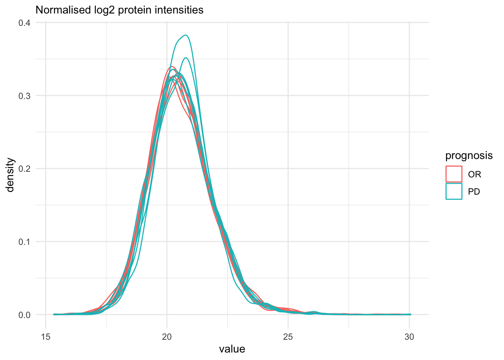
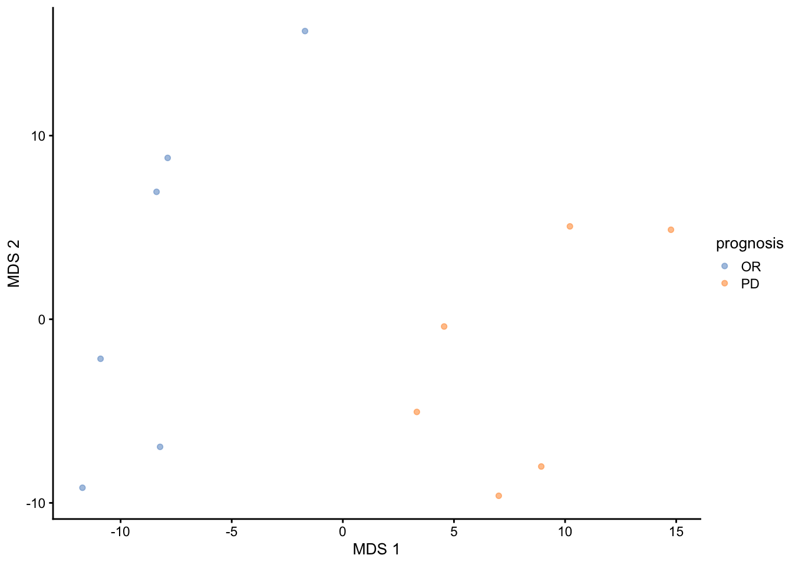
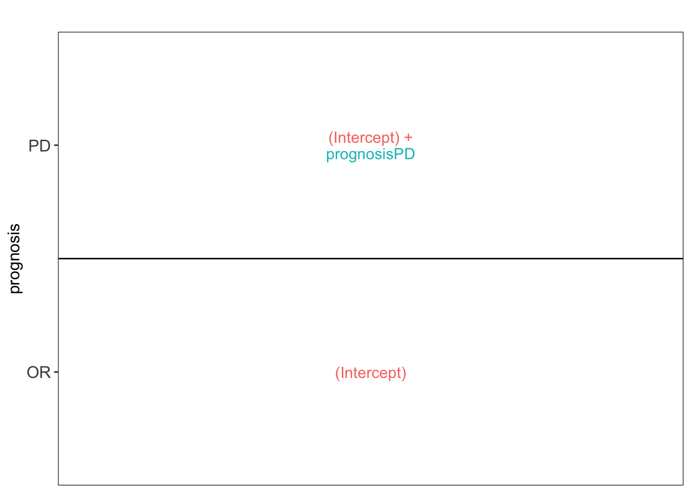
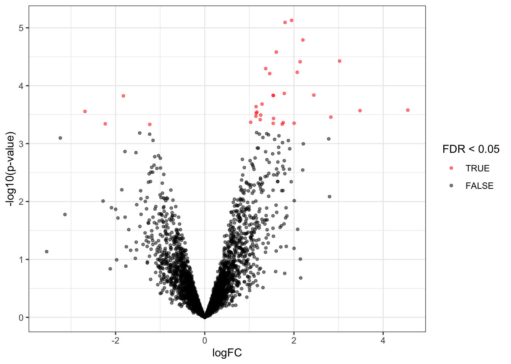
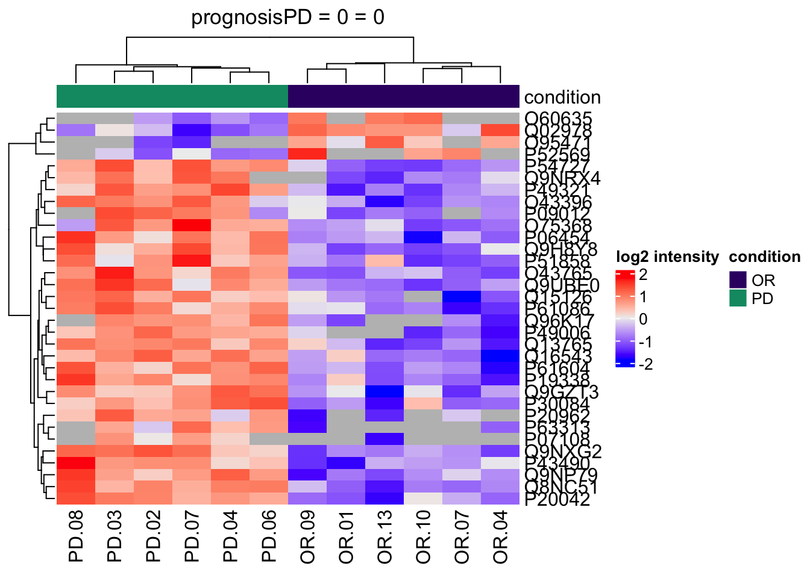
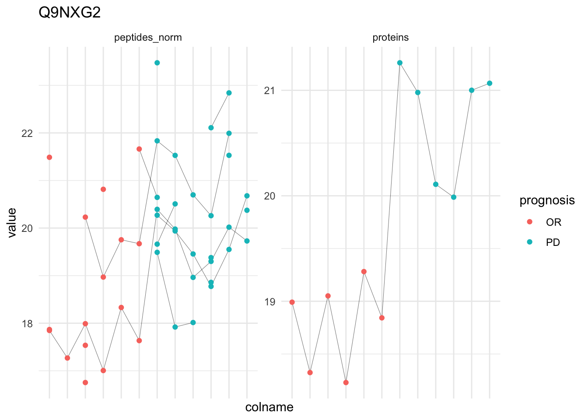
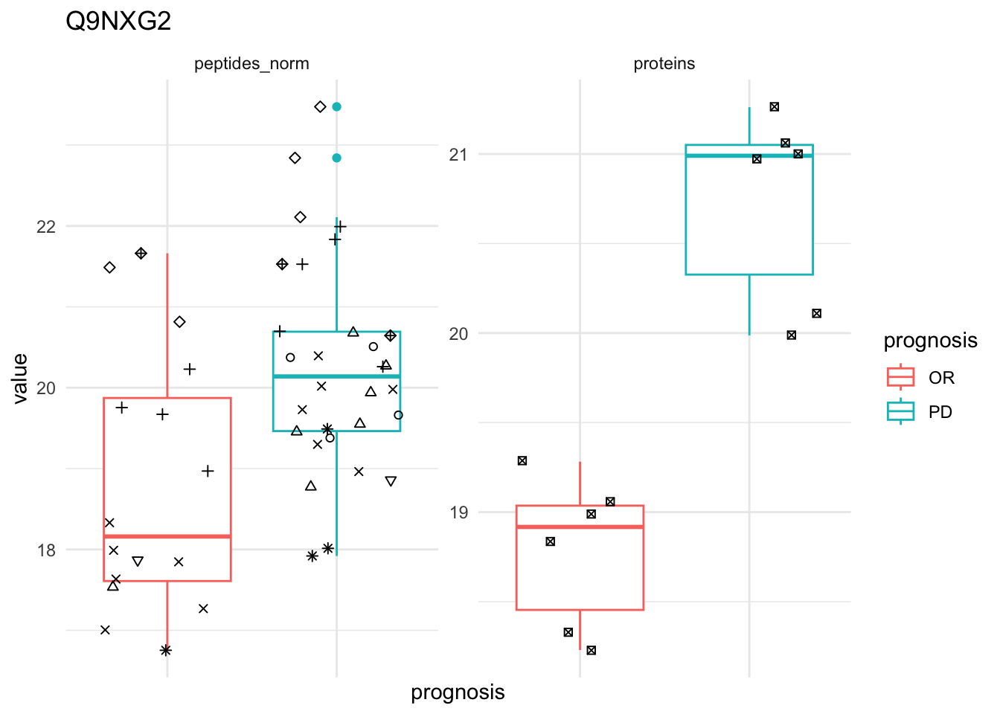

library("QFeatures")
library("dplyr")
library("tidyr")
library("ggplot2")
library("msqrob2")
library("stringr")
library("ExploreModelMatrix")
library("MsCoreUtils")
library("matrixStats")
library("patchwork")
library("kableExtra")
library("ComplexHeatmap")
library("purrr")
library("tibble")
library("scater")Tutorial 1: Cancer 6x6
1 Load packages
We load the msqrob2 package, along with additional packages for data manipulation and visualisation.
2 Load QFeatures object
(
qf <- readRDS(url("https://github.com/statOmics/PDA-DIA/raw/refs/heads/main/data/cancer6x6.rds","rb"))
)An instance of class QFeatures (type: bulk) with 4 sets:
[1] peptides_raw: SummarizedExperiment with 25292 rows and 12 columns
[2] peptides_log: SummarizedExperiment with 25292 rows and 12 columns
[3] peptides_norm: SummarizedExperiment with 25292 rows and 12 columns
[4] proteins: SummarizedExperiment with 3432 rows and 12 columns 3 Data exploration
First assess distribution of marginal protein intensities.
qf[, , "proteins"] |>
longForm(colvars = colnames(colData(qf))) |>
data.frame() |>
filter(!is.na(value)) |>
ggplot() +
aes(x = value,
colour = prognosis,
group = colname) +
geom_density() +
theme_minimal() +
labs(subtitle = "Normalised log2 protein intensities")
Data exploration aims to highlight the main sources of variation in the data prior to data modelling and can pinpoint to outlying or off-behaving samples.
A common approach for data exploration is to perform dimension reduction, such as Multi Dimensional Scaling (MDS). We will first extract the set to explore along the sample annotations (used for plot colouring).
qf |>
getWithColData("proteins") |>
as("SingleCellExperiment") |>
scater::runMDS(exprs_values = 1) |>
scater::plotMDS(colour_by = "prognosis") 
4 Data Modeling (Robust Regression)
4.1 Model estimation
We first define the model. We only have one sources of variability in the experiment that we can model, i.e. the association with prognosis.
We fit the model to each protein in the
proteinssummarised experiment of the QFeatures objectqfusing the msqrob function.
model <- ~ prognosis
qf <- msqrob(
qf,
i = "proteins",
formula = model,
robust = TRUE)We enabled M-estimation (robust = TRUE) for improved robustness against outliers.
The fitting results are available in the msqrobModels column of the rowData. More specifically, the modelling output is stored in the rowData as a statModel object, one model per row (protein). We will see in a later section how to perform statistical inference on the estimated parameters.
models <- rowData(qf[["proteins"]])[["msqrobModels"]]
models[1:3]$A0AV96
Object of class "StatModel"
The type is "rlm"
There number of elements is 5
$A0AVT1
Object of class "StatModel"
The type is "rlm"
There number of elements is 5
$A0FGR8
Object of class "StatModel"
The type is "rlm"
There number of elements is 5 4.2 Inference
We can now convert the research question “do the spike-in conditions affect the protein intensities?” into a statistical hypothesis.
In other words, we need to translate this question in a null and alternative hypothesis on a single model parameter or a linear combination of model parameters, which is also referred to with a contrast.
To aid defining contrasts, we will visualise the experimental design using the ExploreModelMatrix package.
vd <- ExploreModelMatrix::VisualizeDesign(
sampleData = colData(qf),
designFormula = model,
textSizeFitted = 4
)
vd$plotlist[[1]]
contrast <- "prognosisPD = 0"
(L <- makeContrast(
contrast,
parameterNames = colnames(vd$designmatrix)
)) prognosisPD
(Intercept) 0
prognosisPD 1We assess the contrast for each protein.
qf <- hypothesisTest(qf, i = "proteins", contrast = L)We extract the results table from the proteins summarised experiment in the qf object.
inference <-
msqrobCollect(qf[["proteins"]], L)4.3 Report results
We report the results using a results table, volcano plots and heatmaps.
4.3.1 Results table
We report all results that are significant at the nominal FDR level of 5%.
- We define the nominal FDR level
- We filter the results
- We arrange them according to statistical significance
alpha <- 0.05
inference |>
filter(adjPval < alpha) |>
arrange(pval) |>
knitr::kable()| logFC | se | df | t | pval | adjPval | contrast | feature | |
|---|---|---|---|---|---|---|---|---|
| prognosisPD.Q9NXG2 | 1.947158 | 0.2891189 | 14.693542 | 6.734800 | 0.0000074 | 0.0124937 | prognosisPD | Q9NXG2 |
| prognosisPD.P54727 | 1.800418 | 0.2691609 | 14.681425 | 6.689004 | 0.0000081 | 0.0124937 | prognosisPD | P54727 |
| prognosisPD.P61604 | 2.199421 | 0.3471816 | 14.393608 | 6.335072 | 0.0000162 | 0.0167158 | prognosisPD | P61604 |
| prognosisPD.Q8NC51 | 1.603738 | 0.2526453 | 12.910883 | 6.347787 | 0.0000263 | 0.0199115 | prognosisPD | Q8NC51 |
| prognosisPD.P06454 | 3.023520 | 0.5117954 | 14.061376 | 5.907673 | 0.0000375 | 0.0199115 | prognosisPD | P06454 |
| prognosisPD.P49006 | 2.137818 | 0.3406809 | 12.158450 | 6.275133 | 0.0000386 | 0.0199115 | prognosisPD | P49006 |
| prognosisPD.Q9UBE0 | 1.366190 | 0.2387920 | 14.151337 | 5.721255 | 0.0000507 | 0.0212383 | prognosisPD | Q9UBE0 |
| prognosisPD.Q9NRX4 | 2.072592 | 0.3518685 | 12.693542 | 5.890246 | 0.0000586 | 0.0212383 | prognosisPD | Q9NRX4 |
| prognosisPD.P49321 | 1.456612 | 0.2632319 | 14.693542 | 5.533569 | 0.0000618 | 0.0212383 | prognosisPD | P49321 |
| prognosisPD.O43396 | 1.783034 | 0.3447141 | 14.179467 | 5.172500 | 0.0001359 | 0.0330792 | prognosisPD | O43396 |
| prognosisPD.O75368 | 2.445349 | 0.4673492 | 13.428556 | 5.232382 | 0.0001454 | 0.0330792 | prognosisPD | O75368 |
| prognosisPD.P30084 | 1.531196 | 0.2972755 | 14.026817 | 5.150764 | 0.0001464 | 0.0330792 | prognosisPD | P30084 |
| prognosisPD.Q96K17 | 1.540979 | 0.2788175 | 11.589492 | 5.526836 | 0.0001481 | 0.0330792 | prognosisPD | Q96K17 |
| prognosisPD.O60635 | -1.825176 | 0.3041288 | 9.693542 | -6.001325 | 0.0001497 | 0.0330792 | prognosisPD | O60635 |
| prognosisPD.Q16543 | 1.284199 | 0.2564549 | 13.633686 | 5.007504 | 0.0002077 | 0.0428334 | prognosisPD | Q16543 |
| prognosisPD.O43765 | 1.150205 | 0.2332903 | 13.812824 | 4.930358 | 0.0002302 | 0.0436348 | prognosisPD | O43765 |
| prognosisPD.P07108 | 4.553489 | 0.7186841 | 7.693542 | 6.335869 | 0.0002640 | 0.0436348 | prognosisPD | P07108 |
| prognosisPD.P63313 | 3.481498 | 0.6185858 | 9.454242 | 5.628157 | 0.0002693 | 0.0436348 | prognosisPD | P63313 |
| prognosisPD.O95471 | -2.686186 | 0.4506311 | 8.408547 | -5.960942 | 0.0002780 | 0.0436348 | prognosisPD | O95471 |
| prognosisPD.Q13765 | 1.167817 | 0.2447017 | 14.207606 | 4.772411 | 0.0002859 | 0.0436348 | prognosisPD | Q13765 |
| prognosisPD.Q9NP79 | 1.153522 | 0.2408353 | 13.830414 | 4.789672 | 0.0002979 | 0.0436348 | prognosisPD | Q9NP79 |
| prognosisPD.P61086 | 1.254231 | 0.2687113 | 14.672374 | 4.667579 | 0.0003213 | 0.0436348 | prognosisPD | P61086 |
| prognosisPD.Q9H8Y8 | 1.146532 | 0.2469958 | 14.693542 | 4.641910 | 0.0003366 | 0.0436348 | prognosisPD | Q9H8Y8 |
| prognosisPD.P20962 | 2.827078 | 0.5618280 | 11.341592 | 5.031929 | 0.0003485 | 0.0436348 | prognosisPD | P20962 |
| prognosisPD.Q15126 | 1.541573 | 0.3228230 | 12.931935 | 4.775288 | 0.0003678 | 0.0436348 | prognosisPD | Q15126 |
| prognosisPD.P19338 | 1.242621 | 0.2595948 | 12.617838 | 4.786771 | 0.0003857 | 0.0436348 | prognosisPD | P19338 |
| prognosisPD.P20042 | 1.030435 | 0.2245733 | 13.925853 | 4.588413 | 0.0004273 | 0.0436348 | prognosisPD | P20042 |
| prognosisPD.P51858 | 1.759234 | 0.3865508 | 14.254934 | 4.551106 | 0.0004331 | 0.0436348 | prognosisPD | P51858 |
| prognosisPD.P09012 | 2.003517 | 0.4205550 | 12.164234 | 4.763984 | 0.0004440 | 0.0436348 | prognosisPD | P09012 |
| prognosisPD.P43490 | 1.535371 | 0.3390650 | 14.326346 | 4.528248 | 0.0004472 | 0.0436348 | prognosisPD | P43490 |
| prognosisPD.P52569 | -2.231694 | 0.4485435 | 10.693542 | -4.975424 | 0.0004555 | 0.0436348 | prognosisPD | P52569 |
| prognosisPD.Q9GZT3 | 1.735537 | 0.3856205 | 14.456476 | 4.500636 | 0.0004616 | 0.0436348 | prognosisPD | Q9GZT3 |
| prognosisPD.Q02978 | -1.233673 | 0.2725735 | 14.115562 | -4.526020 | 0.0004656 | 0.0436348 | prognosisPD | Q02978 |
We observe that the results only contain spiked UPS proteins.
4.3.2 Volcanoplots
volcanoplot4 <- plot_volcano(inference)
volcanoplot4
Note, that the log fold changes are nicely around the real log2 fold change: \(log2(4/2) = 1\)
4.3.3 Heatmaps
We make the heatmap as follows
We select the names of the proteins that were declared significant between condition A and condition B and extract their quantitative data.
We extract the quantitative data with
assay()and scale by rows.We will create a heatmap using the ComplexHeatmap package, which enables heatmap annotations. We will annotate the heatmap using our model variables condition and lab.
We make the heatmap
sig <- inference |>
filter(adjPval < alpha) |>
arrange(pval) |>
pull(feature) #1.
se <- getWithColData(qf, "proteins")
quants <- t(scale(t(assay(se[sig,])))) #2.
annotations <- columnAnnotation(
condition = se$prognosis
) #3.
set.seed(1234) ## annotation colours are randomly generated by default
heatmap <- Heatmap(
quants,
name = "log2 intensity",
top_annotation = annotations,
column_title = paste0(contrast, " = 0")
) #4.
heatmap
4.3.4 Detail plots
We can explore the data for a protein to validate the statistical inference results. For example, let’s explore the normalised precursor and the summarised protein intensities for the protein with the most significant log2 fold change.
(targetProtein <- inference |>
slice(which.min(pval)) |>
pull(feature)
)[1] "Q9NXG2"To obtain the required data, we perform a little data manipulation pipeline:
We use the QFeatures subsetting functionality to retrieve all data related to and focusing on the peptides_log and proteins sets that contains the peptide ion data used for model fitting. We then convert the data with longForm() for plotting. Finally, we plot the log2 normalised intensities for each sample at the protein and at the peptide level. Since multiple peptides are recorded for the protein, we link peptides across samples using a grey line. Samples are colored according to E. coli spike-in condition.
qf[targetProtein, , c("peptides_norm", "proteins")] |> #1
longForm(colvars = colnames(colData(qf))) |> #2
data.frame() |>
ggplot() +
aes(x = colname,
y = value) +
geom_line(aes(group = rowname), linewidth = 0.1) +
geom_point(aes(colour = prognosis)) +
facet_wrap(~ assay, scales = "free") +
ggtitle(targetProtein) +
theme_minimal() +
theme(axis.text.x = element_blank())
qf[targetProtein, , c("peptides_norm", "proteins")] |> #1
longForm(colvars = colnames(colData(qf))) |> #2
data.frame() %>%
{
ggplot(.) +
aes(x = prognosis,
y = value) +
geom_boxplot(aes(colour = prognosis)) +
facet_wrap(~ assay, scales = "free") +
geom_jitter(aes(shape = rowname)) +
scale_shape_manual(values = seq_len(dplyr::n_distinct(.$rowname))) +
ggtitle(targetProtein) +
theme_minimal() +
theme(axis.text.x = element_blank()) +
guides(shape = "none")
}